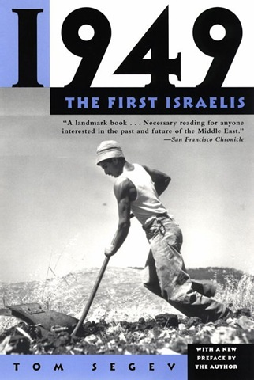

2009-08-09 08:00

I just read Tom Segev’s book, 1949: The First Israelis (ISBN 978-0805058963). Segev calls himself a First historian, as opposed to a New historian, in using only recently-available archive materials from the Knesset and national archives. 1949 is the story of the first years of the new Jewish state, told in the words of those who created it. There are many quotes, for example, from Ben Gurion’s diaries and from transcripts of Knesset sessions and other government meetings.
Segev spends a lot of time on Israeli immigration, the secular/religious divide, government austerity programs, school system(s), the relationship to other governments (particularly the US), and what is striking is that, as Ecclesiastes 1:9 puts it, “that which hath been is that which shall be, and that which hath been done is that which shall be done; and there is nothing new under the sun” applies nicely to tensions in the Jewish state which persist to this date.
For example, post-Zionism - the view that Zionism has done its job and that it’s now time to move on to make Israel a “normal” nation - is currently seen in Israel as a discredited aberration of the 1980’s and 1990’s. Or anti-Zionism - calling for a single, secular state of Jews and Arabs - is now seen as a contemporary response to the failure of a Two State solution. But Segev discusses some of the voices of the Canaanite Movement, like Yohanan Ratosh, who foresaw an Israel eventually without Jews. Of course, breaking as it did from right-wing Revisionist Zionism, the Canaanite movement was hostile to not only Judaism and Eastern European Yiddishkeit, but Islam and Arab civilization as well. It envisioned a secular, Hebraized, Middle Eastern culture encompassing former Jews, Arabs, and Druze. Other groups, like the Hashomer Hatzair, were militantly anti-religious. Organizations like “The League for the Prevention of Religious Coercion” sprang up within 3 years of the founding of the state. Religious Jews were described as “God’s Cossacks.”
Recent riots in Jerusalem over a parking lot could have been torn from the headlines of 1949. In May of that year, the haredi (ultra-Orthodox) rioted over ticket sales for movies on the Sabbath, and over automobile traffic in the Meah Shearim quarter. The haredi, operating on the warnings in Jeremiah 17:27, took “reproof” to mean even physical violence - arson, rock-throwing, home invasions, bare knuckles, and even biting people - and rioting were justified in protecting the peaceful day of rest. Segev, in the chapter entitled “The Battle for the Sabbath,” recounts how (to avoid writing) the ultra-Orthodox bent down the corners of their prayer books containing page numbers to record the license plates of Sabbath violators, whose cars were then torched later in the week.
Segev reminds us that American peace envoys have been involved in Palestine since the very founding of the state of Israel. In September 1948, when the Swedish UN negotiator, Folke Bernadotte, was murdered by Zionist terrorists, Ralph Bunche took over the UN negotiator’s role. Bunche negotiated the 1949 armistice agreement, for which he was awarded the 1950 Nobel Peace Prize.
And the Israeli relationship with America has often been as troubled as it is today. Although the United States was the first nation to recognize Israel, our support of the state was not the one-sided love-fest now cited by Israel’s defenders. Apparently, in recognizing Israel, the United States also expected (imagine!) that an Arab state would soon follow, in realizing the two states apportioned to the land by the United Nations. And the United States was dismayed by Israel’s already apparent plans to sacrifice peace for more land. Segev writes: > Mark Ethridge, the US delegate to the Lausanne conference, wrote President Truman that Israel’s inclination to base her future on her military security, while forgoing the chance of making peace, seemed “unbelievable,” in view of her being such a tiny state. According to him, he had tried to explain to the Israelis that they were endangering their own future and that of the entire Western world, but his efforts had been in vain.
Truman himself wrote to Ben-Gurion arguing in behalf of an Arab state “because he sympathized with the suffering of the Palestinian refugees, just as he had earlier supported the Zionist cause because he had sympathized with the Jewish refugees…” Ben-Gurion fumed about Truman’s letter: > The State of Israel was not established as a consequence of the UN Resolution. Neither America nor any other country saw the resolution through, nor did they stop the Arab countries (and the British mandatory government) from declaring total war on us in violation of UN resolutions. America did not raise a finger to save us, and moreover, imposed an arms embargo… […] There are no refugees - there are fighters who sought to destroy us, root and branch. […] The rebuke and the threatening style [of Truman’s letter] are incomprehensible.
Interestingly, not all distrust of the United States resulted from Israel’s rejection of American even-handedness. Some of it sprang from Israel’s founding as a state that rejected, at least initially, both Western civilization and capitalism. At the founding of Israel in 1948, MAPAM represented Marxist Zionists and had the second largest bloc, next to Ben-Gurion’s MAPAI party. But even Ben-Gurion himself did not regard Israel as a capitalist state. During the “austerity debates,” which resulted from immigration which overtook Israel’s ability to provide jobs and housing for the new olim, Ben-Gurion defended a planned and controlled economic system. He famously declared, “the state of Israel is not a capitalist state.”
Likewise, Americans were suspected of being members of the CIA with “Arabist” motives. When “Fred Harris”, a freelance American military advisor, actually one Fred Grunich, was asked by Ben-Gurion for his military advice, many in the Knesset openly interpreted the real motivation to the desire by the United States to spy on Israel. American Jews too were seen as convenient sources of money but were regarded as second-rate Jews who were not prepared to suffer for the new state, as their Polish brethren had.
Israel’s selective enforcement of laws and endemic corruption have likewise been present since its founding, mainly as a consequence of the internal tensions within Israeli society, which have often caused competing groups to “look the other way” to either bolster their own power or prevent offense to another group. The take-away message is that Israel has always been less a nation of laws than a collection of ideologies and a series of handshake agreements. Conflict between religious blocks, MAPAM, and MAPAI, and major organizations like the Histradrut, the JNF, and the army actually made many fear civil war in the early years.
The discussion of the Nakba, now disputed and actually criminalized in Israel, is recounted in a number of memos and letters by various cabinet and Knesset members of Israel’s first government. As Arab village after village and Arab city after city were emptied and its inhabitants deported, it became clear that it was deliberate. While the American ambassador, James McDonald, argued for a return of the refugees, Ben-Gurion was “as hard as a rock” in his rejection of this. Moshe Sharett wrote: > The most spectacular event in the contemporary history of Palestine, in a way more spectacular than the creation of the Jewish state, is the wholesale evacuation of its Arab population. […] The opportunities opened up by the present reality for a lasting and radical solution of the most vexing problem of the Jewish state, are so far-reaching, as to take one’s breath away. The reversion to the status quo ante is unthinkable.
Josef Weitz, head of the Jewish National Fund, proposed measures designed to drive internally displaced refugees even farther into desolate areas: > They must be harassed continually.
1949 recounts the stories of the aliyot of Yemenite and Polish olim. Yemenites were regarded as savages and were subjected to horrendous conditions in the resettlement camps in Israel. Polish immigrants, by contrast, were put up in hotels.
The Kulturkampf between religious and secular worlds in Israel occupies a large portion of Segev’s book, particularly in the story of the Israeli school systems(s). Censorship, laws, agrarian policy, immigration, defense, housing, settlements - any topic the first Knesset ever discussed - is mentioned in this very readable, exceptionally interesting book.